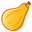

Ejemplo de como desarrollar un simple juego con temporizador y puntaje, utilizando la librería jQuery.
Desarrollado por Cali Rojas
www.lewebmonster.com
Juego de memoria con jQuery
Autor original: Cali Rojas
Sitio web: www.lewebmonster.com
Haga clic en el botón Jugar para iniciar ;)